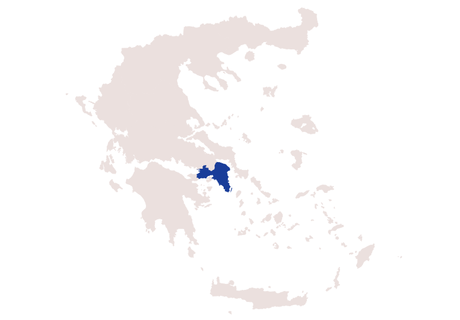
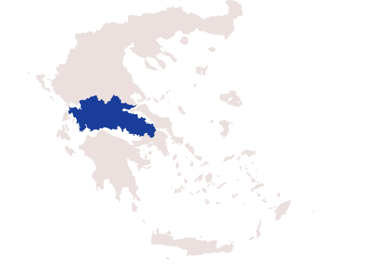
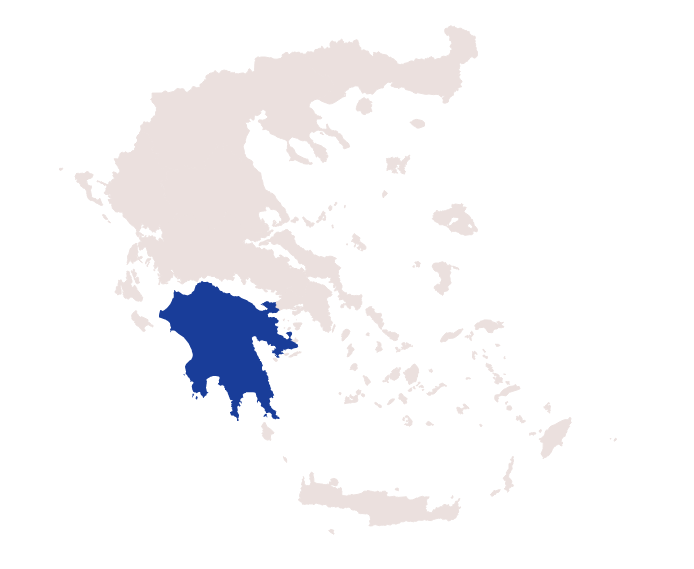
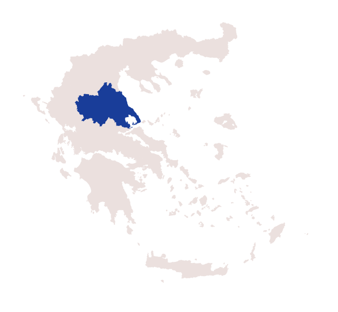

The Mainland
Attica
Attica contains some of the world’s most important museums and archaeological sites, testimony to its very important role in world history. It is where Athens, the capital of Greece and busiest city of the country where lies the famous Acropolis, is situated. Attica offers a chance to visit renowned monuments and masterpieces of art of antiquity and the Middle Ages
Central Greece
Also known as Roumeli, Central Greece is a part of Greek mainland that has been inhabited since antiquity. You can visit the archaeological site of Delphi, the Oracle of Apollo, the towns of Galaxidi and Itea, as well as beautiful Nafpaktos of great historical importance.
Peloponnese
In Peloponnese, you will find monuments from every period of the eventful history, great archeological sites; ancient Olympia, Epidaurus, Mycenae and Tiryns, the Temple of Apollo Epicurius, Byzantine churches and Monasteries.
Thelassy
This region is home to beautiful mountains, rivers, beaches and the popular Plastira Lake. Archeological areas, Byzantine monasteries and churches complete the natural beauty of Thessaly.